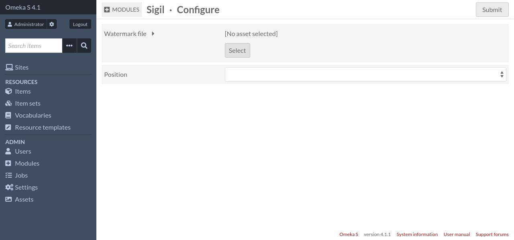
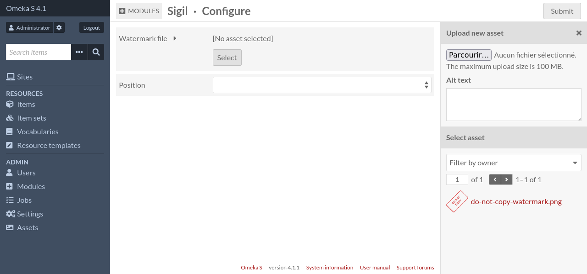

Configuration
To access the configuration page, log in to the administration interface, go to the “Modules” page, find “Sigil” and click on the corresponding “Configure” button.
To select the image to use as watermark, click on the “Select” button. This will open the asset sidebar, where you will be able to upload a new file, or select an existing asset.
For more informations about assets, see Assets in the Omeka S User Manual.
Once the image is selected, you can select a position for the watermark. The available options are:
Center
East
North East
North
North West
South East
South
South West
West
To confirm configuration changes, click on the “Submit” button.